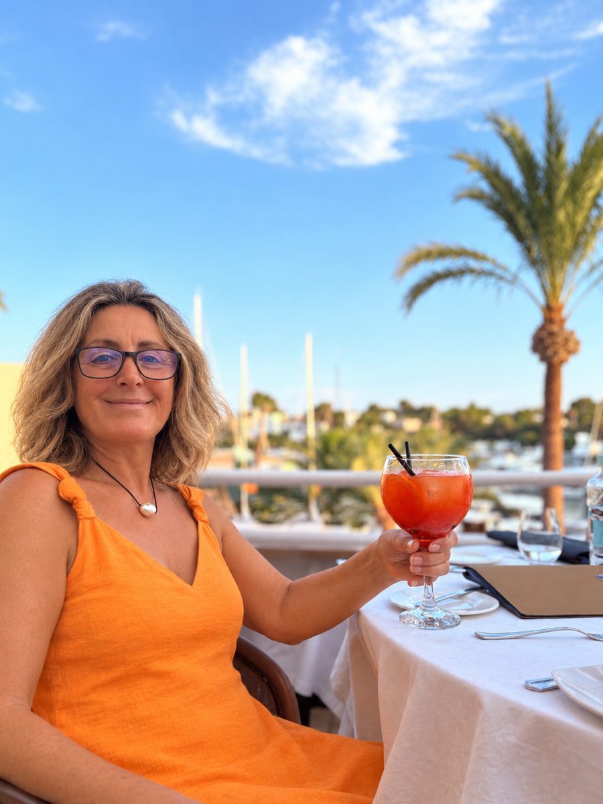

Notartermine
Sie vereinbart den Termin beim Notar, prüft, ob für die Escritura alles vorliegt, und begleitet Ihren Bevollmächtigten am Tag der Beurkundung.
Wir erstellen Ihre Vollmacht in Australien innerhalb einer Woche. Carmen, unsere Partnerin auf Mallorca, kümmert sich um alles auf der Insel: den Notar, das Gutachten, die Verhandlung und die Telefonate, auf Mallorquinisch, Spanisch und Deutsch.
English · Deutsch

Carmen lebt auf Mallorca und betreut unsere Kunden auf allen Baleareninseln. Während Sie in Australien bleiben, ist sie persönlich vor Ort: bei der Besichtigung, beim Gutachter, am Verhandlungstisch und beim Notar.
Carmen ist Muttersprachlerin des Mallorquinischen, des Katalanischen der Insel. So verlaufen Gespräche mit einheimischen Eigentümern und Verkäufern einfach und direkt, auf Mallorquinisch. Außerdem übersetzt sie zwischen Deutsch und Spanisch und ist damit die richtige Ansprechpartnerin für die vielen deutschsprachigen Verkäufer, Makler und Nachbarn auf der Insel. Mit unserem Team in Melbourne haben Sie eine Ansprechperson in Australien und eine auf der Insel, die gemeinsam an Ihrem Vorgang arbeiten.
Sie vereinbart den Termin beim Notar, prüft, ob für die Escritura alles vorliegt, und begleitet Ihren Bevollmächtigten am Tag der Beurkundung.
Sie koordiniert Ihren Anwalt auf Mallorca, ob Ihren eigenen oder einen unserer Partneranwälte, damit Verträge und Prüfungen fristgerecht vorankommen.
Sie organisiert das Gutachten der Immobilie und ist persönlich dabei, damit Sie den Zustand kennen, bevor Sie sich festlegen.
Sie verhandelt mit Verkäufer und Makler auf Mallorquinisch, Spanisch oder Deutsch, persönlich und nach Ihren Vorgaben aus Australien.
Sie führt die Gespräche, für die es eine Stimme vor Ort braucht: Gebäudeversicherung, Versorger, Eigentümergemeinschaft und Makler.
Sobald Sie die Schlüssel haben, kümmert sie sich um das Praktische rund um Ihr Zuhause auf Mallorca, während Sie in Australien sind.
Jeder Kauf auf den Balearen hat eine australische und eine spanische Seite. Wir übernehmen beide.
Der Poder notarial auf Spanisch und Deutsch, mit einer englischen Fassung für den australischen Notary Public, abgestimmt mit dem Notar, bei dem Carmen den Termin vereinbart hat.
Wir buchen den Notary Public, meist innerhalb einer Woche. Sie erscheinen einmal persönlich und unterschreiben.
Wir bringen das Dokument selbst zum DFAT, senden das Original per Kurier nach Mallorca und den Scan noch am selben Tag.
Carmen organisiert die bautechnische Prüfung und verhandelt Preis und Bedingungen nach Ihren Vorgaben.
Ihr Bevollmächtigter unterzeichnet die Kaufurkunde für Sie beim Notar auf Mallorca, im Beisein von Carmen.
Ihre eigenen Schritte und Termine für Spanien zeigt unser kostenloser Vollmacht-Planer (auf Englisch).
Zum PlanerJa. Sie unterschreiben in Australien einmal eine Vollmacht, die wir erstellen, in der Regel innerhalb einer Woche notariell beglaubigen und beim DFAT mit einer Apostille versehen lassen. Carmen, unsere Partnerin auf Mallorca, organisiert dann Gutachten, Verhandlung und Notartermin, und Ihr Bevollmächtigter unterzeichnet die Escritura für Sie.
Alle Baleareninseln: Mallorca, Menorca, Ibiza und Formentera. Sie lebt auf Mallorca und reist für Termine auf die anderen Inseln.
Carmen ist Muttersprachlerin des Mallorquinischen, des auf der Insel gesprochenen Katalanischen, und spricht außerdem Spanisch und Deutsch. Einheimische Eigentümer und Verkäufer sprechen mit ihr direkt auf Mallorquinisch. Unser Team in Melbourne hält Sie auf Deutsch oder Englisch auf dem Laufenden.
Carmen bietet Concierge-Hilfe auf der Insel: Telefonate mit Versicherung und Versorgern, Kontakt zur Eigentümergemeinschaft und alles Praktische rund um Ihr Zuhause auf Mallorca, während Sie in Australien sind.
Nennen Sie uns Insel, Immobilie und Termin, und wir holen Carmen vom ersten Tag an dazu. Wir antworten auf Deutsch oder Englisch.
mail@lunadreyer.com.au